Skin Optics Analysis based on ISSA Data
Junhui He and Tina Lasisi
2025-12-18
Last updated: 2025-12-18
Checks: 5 2
Knit directory: SkinOptics/
This reproducible R Markdown analysis was created with workflowr (version 1.7.1). The Checks tab describes the reproducibility checks that were applied when the results were created. The Past versions tab lists the development history.
The R Markdown file has unstaged changes. To know which version of
the R Markdown file created these results, you’ll want to first commit
it to the Git repo. If you’re still working on the analysis, you can
ignore this warning. When you’re finished, you can run
wflow_publish to commit the R Markdown file and build the
HTML.
Great job! The global environment was empty. Objects defined in the global environment can affect the analysis in your R Markdown file in unknown ways. For reproduciblity it’s best to always run the code in an empty environment.
The command set.seed(20251211) was run prior to running
the code in the R Markdown file. Setting a seed ensures that any results
that rely on randomness, e.g. subsampling or permutations, are
reproducible.
Great job! Recording the operating system, R version, and package versions is critical for reproducibility.
- derivatives-face
- derivatives-palm
To ensure reproducibility of the results, delete the cache directory
JID_SkinOptics_cache and re-run the analysis. To have
workflowr automatically delete the cache directory prior to building the
file, set delete_cache = TRUE when running
wflow_build() or wflow_publish().
Great job! Using relative paths to the files within your workflowr project makes it easier to run your code on other machines.
Great! You are using Git for version control. Tracking code development and connecting the code version to the results is critical for reproducibility.
The results in this page were generated with repository version 40b4375. See the Past versions tab to see a history of the changes made to the R Markdown and HTML files.
Note that you need to be careful to ensure that all relevant files for
the analysis have been committed to Git prior to generating the results
(you can use wflow_publish or
wflow_git_commit). workflowr only checks the R Markdown
file, but you know if there are other scripts or data files that it
depends on. Below is the status of the Git repository when the results
were generated:
Ignored files:
Ignored: .DS_Store
Ignored: analysis/skin-map_cache/
Ignored: data/worldclim/
Unstaged changes:
Modified: analysis/JID_SkinOptics.Rmd
Note that any generated files, e.g. HTML, png, CSS, etc., are not included in this status report because it is ok for generated content to have uncommitted changes.
These are the previous versions of the repository in which changes were
made to the R Markdown (analysis/JID_SkinOptics.Rmd) and
HTML (docs/JID_SkinOptics.html) files. If you’ve configured
a remote Git repository (see ?wflow_git_remote), click on
the hyperlinks in the table below to view the files as they were in that
past version.
| File | Version | Author | Date | Message |
|---|---|---|---|---|
| Rmd | 40b4375 | tinalasisi | 2025-12-18 | updates to tests |
| html | 40b4375 | tinalasisi | 2025-12-18 | updates to tests |
| Rmd | 90b5102 | tinalasisi | 2025-12-18 | Revise Skin Optics analysis: improved deduplication, plotting, and reproducibility |
| html | 90b5102 | tinalasisi | 2025-12-18 | Revise Skin Optics analysis: improved deduplication, plotting, and reproducibility |
| html | 9956d2d | Junhui He | 2025-12-17 | Build site. |
| Rmd | a6f7dc4 | Junhui He | 2025-12-17 | update JID_SkinOptics.Rmd |
| html | 32c3e8f | Junhui He | 2025-12-11 | Rebuild site to apply navbar layout |
| html | b2cbe44 | Junhui He | 2025-12-11 | Build site. |
| Rmd | df71367 | Junhui He | 2025-12-11 | modify face site |
| html | d98f12d | Junhui He | 2025-12-11 | Build site. |
| Rmd | 2fc3d03 | Junhui He | 2025-12-11 | add correlation analysis |
| html | 81580b5 | Junhui He | 2025-12-11 | build workflowr |
| Rmd | e11deee | Junhui He | 2025-12-11 | calculate EI |
| html | e11deee | Junhui He | 2025-12-11 | calculate EI |
| Rmd | 53d4f9c | Junhui He | 2025-12-11 | create SkinOptics |
| html | 53d4f9c | Junhui He | 2025-12-11 | create SkinOptics |
Clarifications
Melanin index (MI) is calculated from skin reflectance at 680 nm, where \(R_{680}\) is the measured reflectance percentage (0-100):
- \[MI = -100 \times \log_{10}(R_{680} / 100)\]
- This is equivalent to the standard formula \(MI = 100 \times \log_{10}(1/R)\), where \(R\) is reflectance as a decimal (0-1)
- Internally, this is computed by first calculating absorbance (\(A_{680} = -\log_{10}(R_{680} / 100)\)), then multiplying by 100
Erythema index (EI) is calculated as: \[EI = 100 \times \log_{10}\left(\frac{R_{680}}{(R_{550} + R_{560})/2}\right)\] where \(R_{550}\), \(R_{560}\), and \(R_{680}\) are the reflectance percentages at 550 nm, 560 nm, and 680 nm, respectively.
EI variability is measured by the standard deviation of EIs within a sliding window of MI values. The window size is set to 20 MI units, and the step size is 1 MI unit.
- For each center MI value in the sequence, all EI values corresponding to MI values within the window (center MI \(\pm\) 10) are collected, and their standard deviation is computed.
- The center MI values range from the 1st to the 99th percentile of observed MI values.
FACE site refers to Forehead or Cheek, while PALM site refers to the palm of the hand.
Representative FACE MI:
- For each subject, the FACE MI is given by the Forehead MI if the Forehead MI is available; otherwise, it is the Cheek MI.
- For subjects with multiple measurements at the same FACE site, we randomly select one measurement.
- Each subject has only one representative FACE reflectance spectra.
First derivatives of skin spectra are estimated using local polynomial regression with bandwidth selected by the dpill function, scaled by a factor of 0.7.
Eumelanin class are defined based on melanin index ranges as follows:
- Low: \(MI < 25\)
- Intermediate low: \(25 \leq MI < 50\)
- Intermediate: \(50 \leq MI < 75\)
- Intermediate high: \(75 \leq MI < 100\)
- High: \(MI \geq 100\)
The pdf files generated in this analysis are saved in the “output” directory.
Visualizations
Face readings before deduplication: 4603 Unique individuals with face readings: 2102 Face readings after deduplication: 2102 Palm readings before deduplication: 776 Unique individuals with palm readings: 776 Palm readings after deduplication: 776 Distribution of melanin index by site
Final data summary:Face: n = 2101 | Unique individuals: 2101 Palm: n = 776 | Unique individuals: 776 Combined: n = 2877 
Unique subjects per site across representative face melanin index bins (Heatmap)
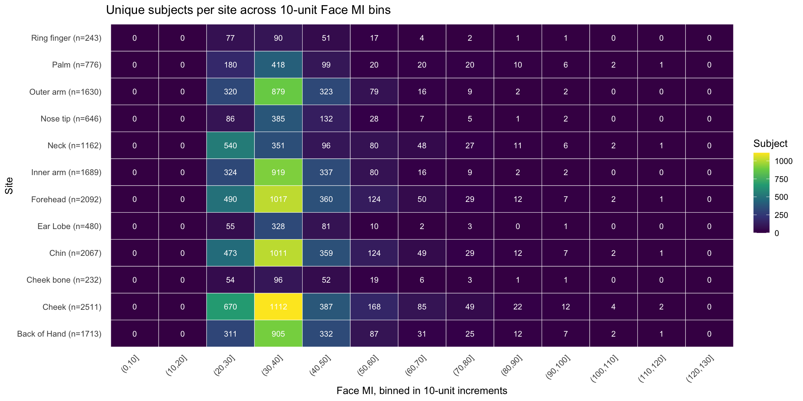
| Eumelanin class | Number of subjects |
|---|---|
| Low | 77 |
| Intermediate low | 1800 |
| Intermediate | 191 |
| Intermediate high | 30 |
| High | 3 |
| Eumelanin class | Number of subjects |
|---|---|
| Low | 127 |
| Intermediate low | 621 |
| Intermediate | 27 |
| Intermediate high | 1 |
Reflectance by eumelanin class
face reflectance by face eumelanin class
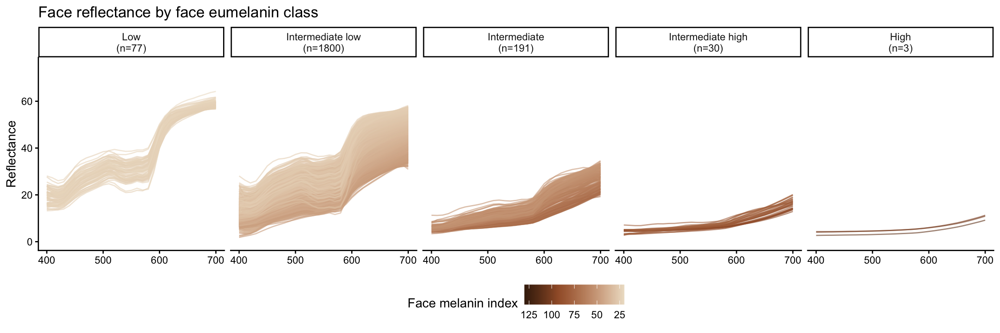
palm reflectance by palm eumelanin class
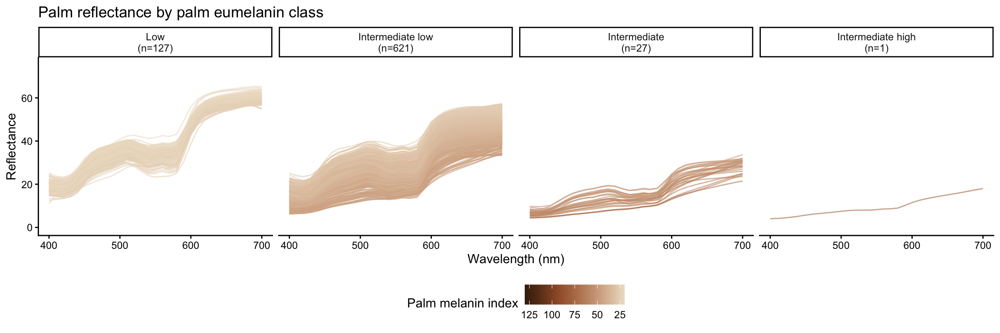
First derivatives of reflectance by eumelanin class
face reflectance derivatives by face eumelanin class
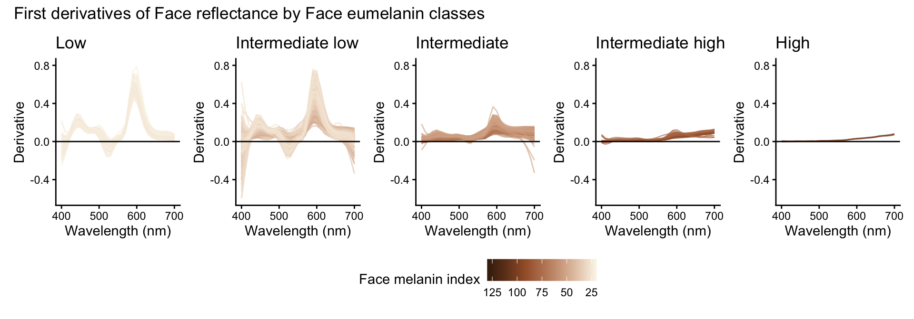
palm reflectance derivatives by palm eumelanin class
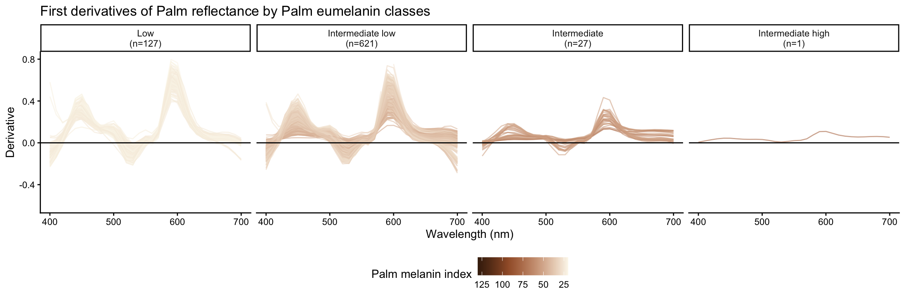
Composite figure: face reflectance and derivatives by eumelanin class
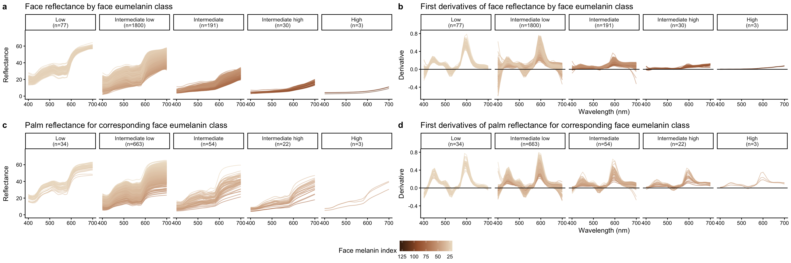
First derivatives of absorbance by eumelanin class
face absorbance derivatives by face eumelanin class

palm absorbance derivatives by palm eumelanin class
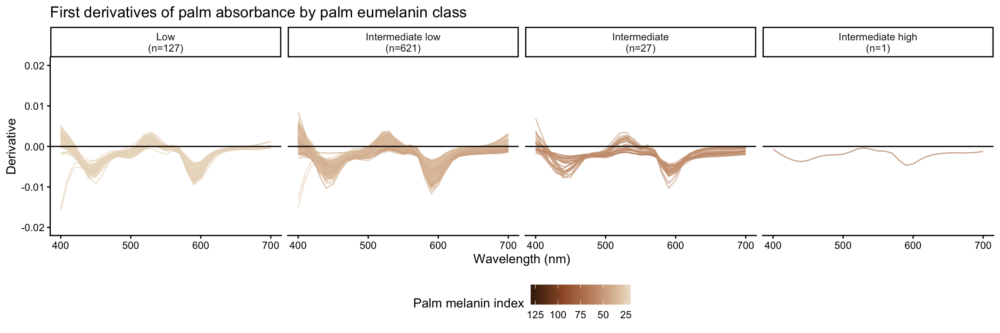
Correlation between reflectance derivative sd and melanin index
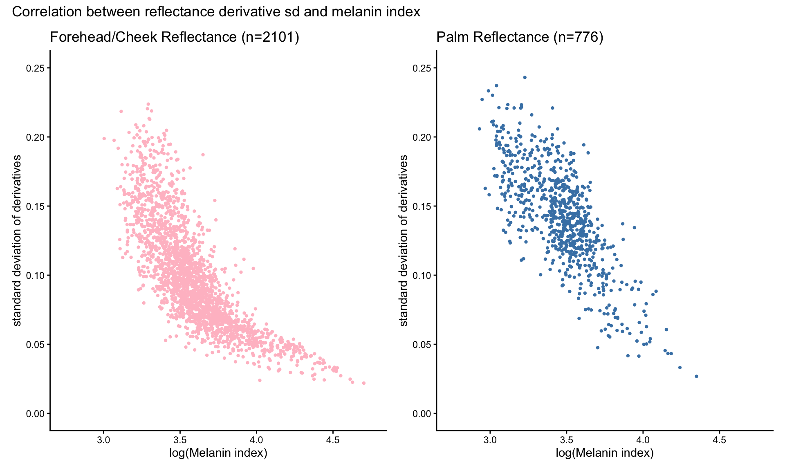
- Regression analysis
Call:
lm(formula = sd_ref ~ log_mi + I(log_mi^2), data = sd_face)
Residuals:
Min 1Q Median 3Q Max
-0.069033 -0.014140 -0.001695 0.011080 0.100513
Coefficients:
Estimate Std. Error t value Pr(>|t|)
(Intercept) 1.558619 0.066400 23.47 <2e-16 ***
log_mi -0.681307 0.035862 -19.00 <2e-16 ***
I(log_mi^2) 0.076171 0.004826 15.78 <2e-16 ***
---
Signif. codes: 0 '***' 0.001 '**' 0.01 '*' 0.05 '.' 0.1 ' ' 1
Residual standard error: 0.02264 on 2098 degrees of freedom
Multiple R-squared: 0.6497, Adjusted R-squared: 0.6494
F-statistic: 1946 on 2 and 2098 DF, p-value: < 2.2e-16
Call:
lm(formula = sd_ref ~ log_mi, data = sd_palm)
Residuals:
Min 1Q Median 3Q Max
-0.066053 -0.016370 0.000337 0.015371 0.071971
Coefficients:
Estimate Std. Error t value Pr(>|t|)
(Intercept) 0.560165 0.013160 42.56 <2e-16 ***
log_mi -0.120567 0.003789 -31.82 <2e-16 ***
---
Signif. codes: 0 '***' 0.001 '**' 0.01 '*' 0.05 '.' 0.1 ' ' 1
Residual standard error: 0.0238 on 774 degrees of freedom
Multiple R-squared: 0.5668, Adjusted R-squared: 0.5662
F-statistic: 1013 on 1 and 774 DF, p-value: < 2.2e-16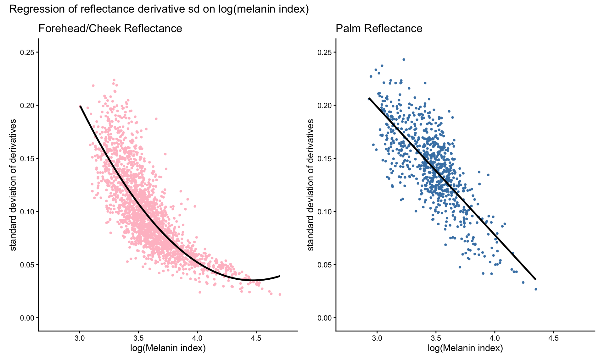
Log-transformed: Derivative SD vs melanin index (reflectance)
=== Log-log regression: log(sd_ref) ~ log(mi) ===FACE:
Call:
lm(formula = log(sd_ref) ~ log(mi), data = sd_face)
Residuals:
Min 1Q Median 3Q Max
-0.80045 -0.14091 0.00135 0.13879 0.78775
Coefficients:
Estimate Std. Error t value Pr(>|t|)
(Intercept) 2.35968 0.06520 36.19 <2e-16 ***
log(mi) -1.32148 0.01813 -72.89 <2e-16 ***
---
Signif. codes: 0 '***' 0.001 '**' 0.01 '*' 0.05 '.' 0.1 ' ' 1
Residual standard error: 0.2134 on 2099 degrees of freedom
Multiple R-squared: 0.7168, Adjusted R-squared: 0.7166
F-statistic: 5312 on 1 and 2099 DF, p-value: < 2.2e-16
PALM:
Call:
lm(formula = log(sd_ref) ~ log(mi), data = sd_palm)
Residuals:
Min 1Q Median 3Q Max
-0.81944 -0.10556 0.01225 0.13604 0.49637
Coefficients:
Estimate Std. Error t value Pr(>|t|)
(Intercept) 1.46811 0.10826 13.56 <2e-16 ***
log(mi) -0.99743 0.03117 -32.00 <2e-16 ***
---
Signif. codes: 0 '***' 0.001 '**' 0.01 '*' 0.05 '.' 0.1 ' ' 1
Residual standard error: 0.1958 on 774 degrees of freedom
Multiple R-squared: 0.5695, Adjusted R-squared: 0.569
F-statistic: 1024 on 1 and 774 DF, p-value: < 2.2e-16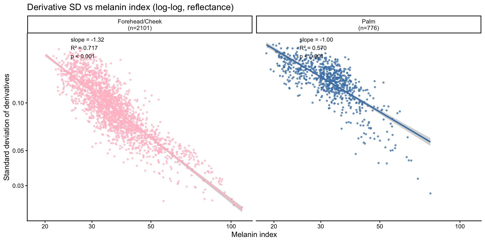
Derivative peak and valley analysis (500-650 nm)
For each individual spectrum, we identify the peak (maximum) and valley (minimum) of the first derivative within the 500-650 nm wavelength range. This range captures the hemoglobin absorption features.
Face derivative peak/valley summary (500-650 nm):Peak wavelength - Mean: 593.4 SD: 8.8 Valley wavelength - Mean: 530.1 SD: 11.2
Palm derivative peak/valley summary (500-650 nm):Peak wavelength - Mean: 591.2 SD: 3.2 Valley wavelength - Mean: 529.8 SD: 1.6 
Regression: Peak/valley location and value vs melanin index
=== FACE: Peak and Valley vs Melanin Index ===Peak wavelength ~ MI:
Call:
lm(formula = peak_wavelength ~ mi, data = face_peak_valley)
Residuals:
Min 1Q Median 3Q Max
-34.898 -3.530 -1.138 1.738 42.895
Coefficients:
Estimate Std. Error t value Pr(>|t|)
(Intercept) 576.68823 0.55179 1045.1 <2e-16 ***
mi 0.44617 0.01412 31.6 <2e-16 ***
---
Signif. codes: 0 '***' 0.001 '**' 0.01 '*' 0.05 '.' 0.1 ' ' 1
Residual standard error: 7.239 on 2099 degrees of freedom
Multiple R-squared: 0.3223, Adjusted R-squared: 0.322
F-statistic: 998.3 on 1 and 2099 DF, p-value: < 2.2e-16
Valley wavelength ~ MI:
Call:
lm(formula = valley_wavelength ~ mi, data = face_peak_valley)
Residuals:
Min 1Q Median 3Q Max
-31.727 -1.898 -0.790 0.548 120.351
Coefficients:
Estimate Std. Error t value Pr(>|t|)
(Intercept) 538.70815 0.82978 649.22 <2e-16 ***
mi -0.22953 0.02123 -10.81 <2e-16 ***
---
Signif. codes: 0 '***' 0.001 '**' 0.01 '*' 0.05 '.' 0.1 ' ' 1
Residual standard error: 10.89 on 2099 degrees of freedom
Multiple R-squared: 0.05273, Adjusted R-squared: 0.05228
F-statistic: 116.8 on 1 and 2099 DF, p-value: < 2.2e-16
Peak value ~ MI:
Call:
lm(formula = peak_value ~ mi, data = face_peak_valley)
Residuals:
Min 1Q Median 3Q Max
-0.18771 -0.04834 -0.01068 0.03352 0.35911
Coefficients:
Estimate Std. Error t value Pr(>|t|)
(Intercept) 0.7393814 0.0054962 134.53 <2e-16 ***
mi -0.0095523 0.0001407 -67.92 <2e-16 ***
---
Signif. codes: 0 '***' 0.001 '**' 0.01 '*' 0.05 '.' 0.1 ' ' 1
Residual standard error: 0.0721 on 2099 degrees of freedom
Multiple R-squared: 0.6872, Adjusted R-squared: 0.6871
F-statistic: 4612 on 1 and 2099 DF, p-value: < 2.2e-16
Valley value ~ MI:
Call:
lm(formula = valley_value ~ mi, data = face_peak_valley)
Residuals:
Min 1Q Median 3Q Max
-0.149037 -0.021909 0.004065 0.025444 0.101464
Coefficients:
Estimate Std. Error t value Pr(>|t|)
(Intercept) -7.788e-02 2.892e-03 -26.93 <2e-16 ***
mi 1.810e-03 7.401e-05 24.46 <2e-16 ***
---
Signif. codes: 0 '***' 0.001 '**' 0.01 '*' 0.05 '.' 0.1 ' ' 1
Residual standard error: 0.03794 on 2099 degrees of freedom
Multiple R-squared: 0.2218, Adjusted R-squared: 0.2214
F-statistic: 598.3 on 1 and 2099 DF, p-value: < 2.2e-16
=== PALM: Peak and Valley vs Melanin Index ===Peak wavelength ~ MI:
Call:
lm(formula = peak_wavelength ~ mi, data = palm_peak_valley)
Residuals:
Min 1Q Median 3Q Max
-5.1837 -1.4310 -0.9626 -0.0740 10.3396
Coefficients:
Estimate Std. Error t value Pr(>|t|)
(Intercept) 586.86185 0.47421 1237.565 <2e-16 ***
mi 0.13084 0.01405 9.313 <2e-16 ***
---
Signif. codes: 0 '***' 0.001 '**' 0.01 '*' 0.05 '.' 0.1 ' ' 1
Residual standard error: 3.04 on 774 degrees of freedom
Multiple R-squared: 0.1008, Adjusted R-squared: 0.09961
F-statistic: 86.74 on 1 and 774 DF, p-value: < 2.2e-16
Valley wavelength ~ MI:
Call:
lm(formula = valley_wavelength ~ mi, data = palm_peak_valley)
Residuals:
Min 1Q Median 3Q Max
-9.9124 0.1110 0.1858 0.2405 10.1440
Coefficients:
Estimate Std. Error t value Pr(>|t|)
(Intercept) 530.260853 0.254584 2082.852 <2e-16 ***
mi -0.013826 0.007542 -1.833 0.0672 .
---
Signif. codes: 0 '***' 0.001 '**' 0.01 '*' 0.05 '.' 0.1 ' ' 1
Residual standard error: 1.632 on 774 degrees of freedom
Multiple R-squared: 0.004323, Adjusted R-squared: 0.003036
F-statistic: 3.36 on 1 and 774 DF, p-value: 0.06717
Peak value ~ MI:
Call:
lm(formula = peak_value ~ mi, data = palm_peak_valley)
Residuals:
Min 1Q Median 3Q Max
-0.187325 -0.048439 -0.007921 0.049163 0.249649
Coefficients:
Estimate Std. Error t value Pr(>|t|)
(Intercept) 0.8273744 0.0109182 75.78 <2e-16 ***
mi -0.0106817 0.0003235 -33.02 <2e-16 ***
---
Signif. codes: 0 '***' 0.001 '**' 0.01 '*' 0.05 '.' 0.1 ' ' 1
Residual standard error: 0.07 on 774 degrees of freedom
Multiple R-squared: 0.5849, Adjusted R-squared: 0.5843
F-statistic: 1091 on 1 and 774 DF, p-value: < 2.2e-16
Valley value ~ MI:
Call:
lm(formula = valley_value ~ mi, data = palm_peak_valley)
Residuals:
Min 1Q Median 3Q Max
-0.114064 -0.031746 -0.004144 0.027809 0.161850
Coefficients:
Estimate Std. Error t value Pr(>|t|)
(Intercept) -0.1913198 0.0068269 -28.02 <2e-16 ***
mi 0.0030023 0.0002023 14.84 <2e-16 ***
---
Signif. codes: 0 '***' 0.001 '**' 0.01 '*' 0.05 '.' 0.1 ' ' 1
Residual standard error: 0.04377 on 774 degrees of freedom
Multiple R-squared: 0.2216, Adjusted R-squared: 0.2206
F-statistic: 220.3 on 1 and 774 DF, p-value: < 2.2e-16Visualization: Peak/valley wavelength vs melanin index
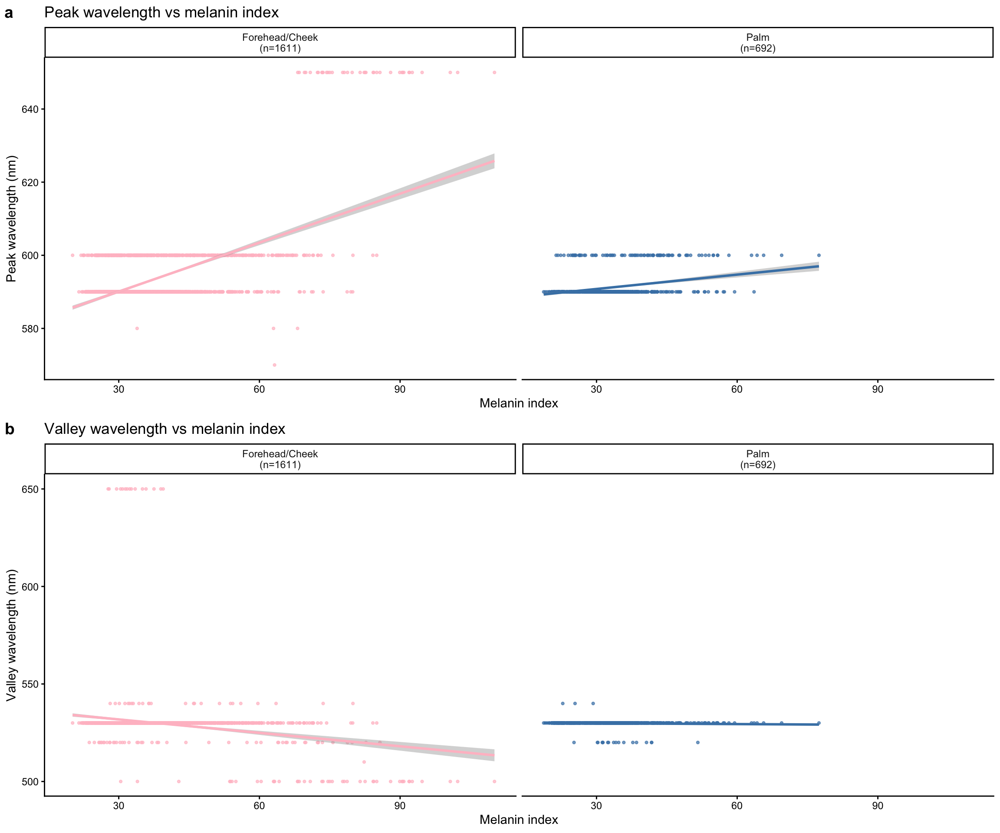
| Version | Author | Date |
|---|---|---|
| 40b4375 | tinalasisi | 2025-12-18 |
Log-transformed: Peak/valley wavelength vs melanin index
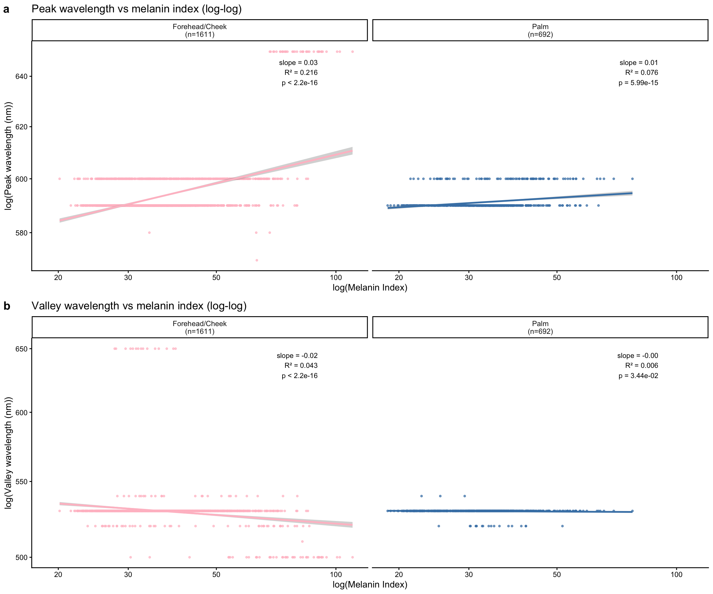
| Version | Author | Date |
|---|---|---|
| 40b4375 | tinalasisi | 2025-12-18 |

Log-transformed: Peak/valley value vs melanin index
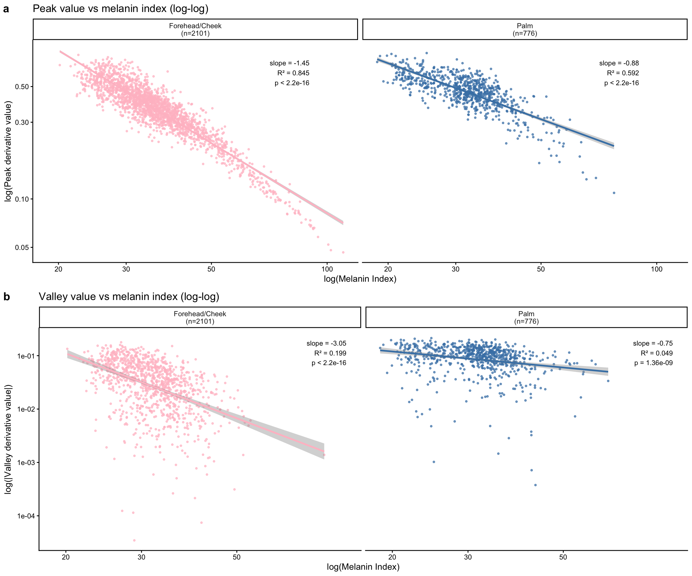
| Version | Author | Date |
|---|---|---|
| 40b4375 | tinalasisi | 2025-12-18 |
Delta (peak - valley) vs melanin index
The delta represents the amplitude of the hemoglobin absorption feature in the derivative spectrum - the difference between the peak and valley values.
Delta (peak - valley) summary:Face: Min. 1st Qu. Median Mean 3rd Qu. Max.
0.04004 0.27772 0.37771 0.39182 0.49500 0.93954
Palm: Min. 1st Qu. Median Mean 3rd Qu. Max.
0.1015 0.4844 0.5746 0.5692 0.6605 0.9887 === FACE: Delta (peak - valley) vs Melanin Index ===
Call:
lm(formula = delta ~ mi, data = face_peak_valley)
Residuals:
Min 1Q Median 3Q Max
-0.27745 -0.07247 -0.01447 0.05338 0.47412
Coefficients:
Estimate Std. Error t value Pr(>|t|)
(Intercept) 0.8172622 0.0081496 100.28 <2e-16 ***
mi -0.0113627 0.0002086 -54.48 <2e-16 ***
---
Signif. codes: 0 '***' 0.001 '**' 0.01 '*' 0.05 '.' 0.1 ' ' 1
Residual standard error: 0.1069 on 2099 degrees of freedom
Multiple R-squared: 0.5858, Adjusted R-squared: 0.5856
F-statistic: 2968 on 1 and 2099 DF, p-value: < 2.2e-16
=== PALM: Delta (peak - valley) vs Melanin Index ===
Call:
lm(formula = delta ~ mi, data = palm_peak_valley)
Residuals:
Min 1Q Median 3Q Max
-0.282128 -0.069668 -0.003611 0.075198 0.314928
Coefficients:
Estimate Std. Error t value Pr(>|t|)
(Intercept) 1.0186942 0.0161829 62.95 <2e-16 ***
mi -0.0136839 0.0004794 -28.54 <2e-16 ***
---
Signif. codes: 0 '***' 0.001 '**' 0.01 '*' 0.05 '.' 0.1 ' ' 1
Residual standard error: 0.1038 on 774 degrees of freedom
Multiple R-squared: 0.5128, Adjusted R-squared: 0.5122
F-statistic: 814.6 on 1 and 774 DF, p-value: < 2.2e-16
Log-transformed: Delta vs melanin index
=== Log-log regression: log(delta) ~ log(mi) ===FACE:
Call:
lm(formula = log(delta) ~ log(mi), data = delta_face)
Residuals:
Min 1Q Median 3Q Max
-0.89324 -0.15612 0.00565 0.15903 0.79202
Coefficients:
Estimate Std. Error t value Pr(>|t|)
(Intercept) 5.20782 0.07044 73.93 <2e-16 ***
log(mi) -1.74330 0.01959 -89.00 <2e-16 ***
---
Signif. codes: 0 '***' 0.001 '**' 0.01 '*' 0.05 '.' 0.1 ' ' 1
Residual standard error: 0.2306 on 2099 degrees of freedom
Multiple R-squared: 0.7905, Adjusted R-squared: 0.7904
F-statistic: 7921 on 1 and 2099 DF, p-value: < 2.2e-16
PALM:
Call:
lm(formula = log(delta) ~ log(mi), data = delta_palm)
Residuals:
Min 1Q Median 3Q Max
-0.94014 -0.11438 0.02426 0.15211 0.53171
Coefficients:
Estimate Std. Error t value Pr(>|t|)
(Intercept) 2.8407 0.1233 23.04 <2e-16 ***
log(mi) -0.9945 0.0355 -28.02 <2e-16 ***
---
Signif. codes: 0 '***' 0.001 '**' 0.01 '*' 0.05 '.' 0.1 ' ' 1
Residual standard error: 0.223 on 774 degrees of freedom
Multiple R-squared: 0.5035, Adjusted R-squared: 0.5029
F-statistic: 784.9 on 1 and 774 DF, p-value: < 2.2e-16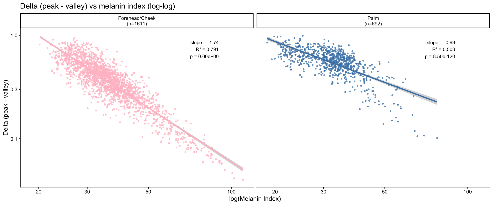
| Version | Author | Date |
|---|---|---|
| 40b4375 | tinalasisi | 2025-12-18 |
Correlation between absorbance derivative sd and melanin index
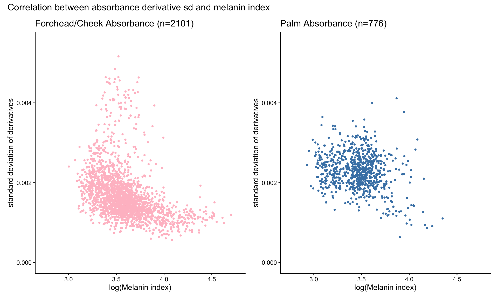
Log-transformed: Derivative SD vs melanin index (absorbance)
=== Log-log regression: log(sd_abs) ~ log(mi) ===FACE:
Call:
lm(formula = log(sd_abs) ~ log(mi), data = sd_face)
Residuals:
Min 1Q Median 3Q Max
-0.85684 -0.18033 -0.01627 0.13516 1.14607
Coefficients:
Estimate Std. Error t value Pr(>|t|)
(Intercept) -4.23656 0.08862 -47.81 <2e-16 ***
log(mi) -0.61138 0.02464 -24.81 <2e-16 ***
---
Signif. codes: 0 '***' 0.001 '**' 0.01 '*' 0.05 '.' 0.1 ' ' 1
Residual standard error: 0.2901 on 2099 degrees of freedom
Multiple R-squared: 0.2267, Adjusted R-squared: 0.2264
F-statistic: 615.5 on 1 and 2099 DF, p-value: < 2.2e-16
PALM:
Call:
lm(formula = log(sd_abs) ~ log(mi), data = sd_palm)
Residuals:
Min 1Q Median 3Q Max
-1.13969 -0.11919 0.00882 0.14246 0.72193
Coefficients:
Estimate Std. Error t value Pr(>|t|)
(Intercept) -5.12360 0.11652 -43.974 <2e-16 ***
log(mi) -0.28220 0.03355 -8.412 <2e-16 ***
---
Signif. codes: 0 '***' 0.001 '**' 0.01 '*' 0.05 '.' 0.1 ' ' 1
Residual standard error: 0.2107 on 774 degrees of freedom
Multiple R-squared: 0.08377, Adjusted R-squared: 0.08259
F-statistic: 70.77 on 1 and 774 DF, p-value: < 2.2e-16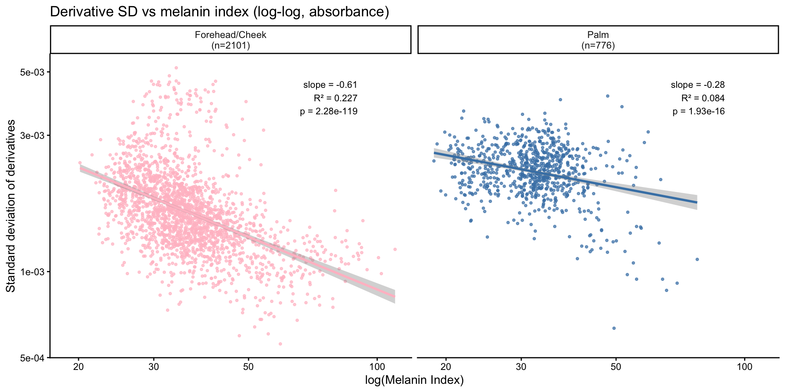
Correlation between erythema index and melanin index by site
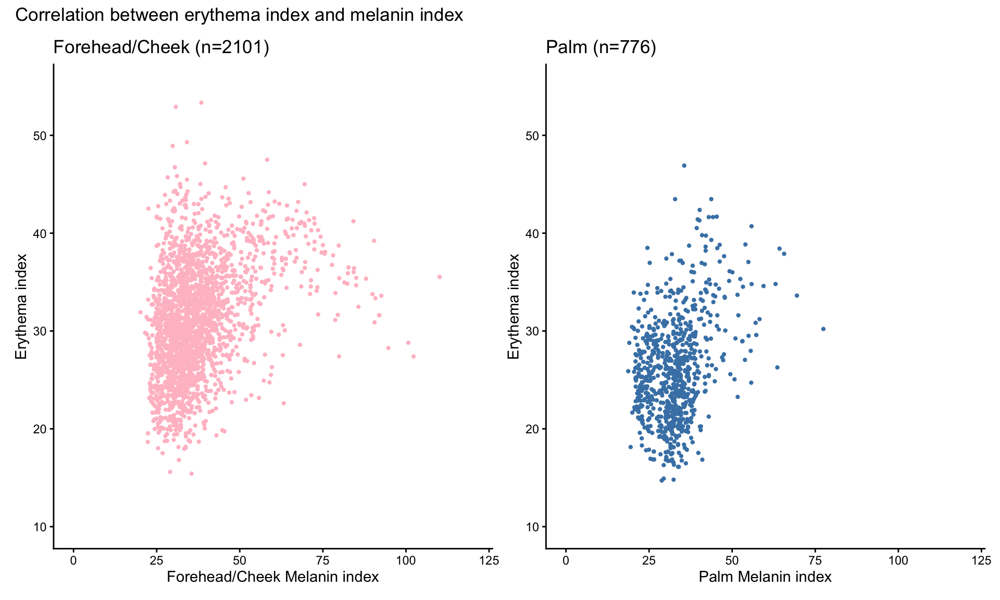
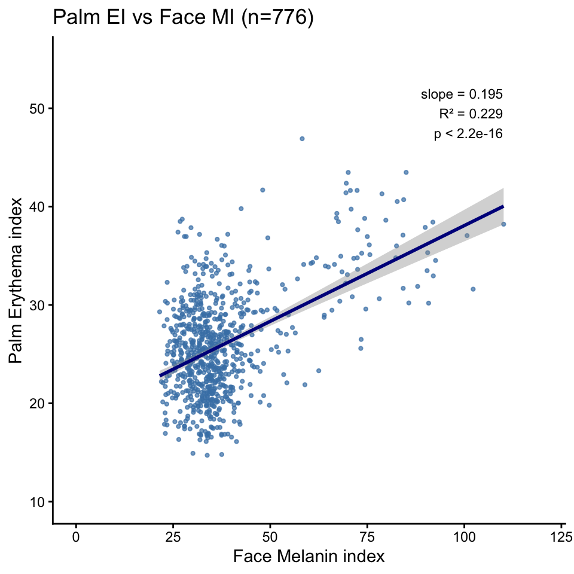
Correlation between erythema index variability and melanin index by site
- EI variability is measured by the standard deviation of EIs within a
sliding window of MI values. The window size is set to 20 MI units, and
the step size is 1 MI unit.
- For each center MI value in the sequence, all EI values corresponding to MI values within the window (center MI ± 10) are collected, and their standard deviation is computed.
- The center MI values range from the 1st to the 99th percentile of observed MI values.
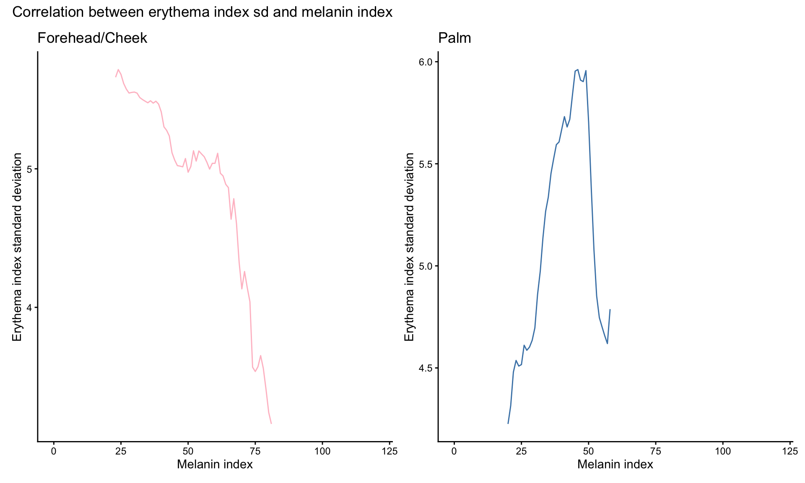
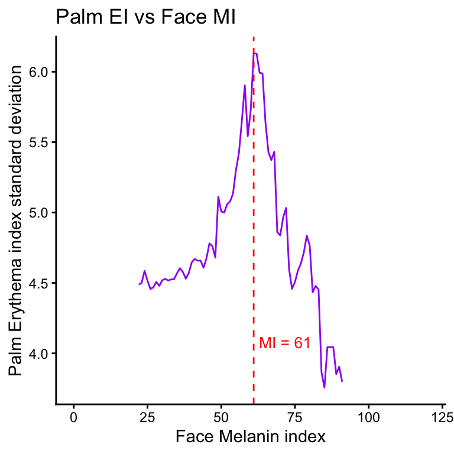
R version 4.5.2 (2025-10-31)
Platform: aarch64-apple-darwin20
Running under: macOS Tahoe 26.1
Matrix products: default
BLAS: /System/Library/Frameworks/Accelerate.framework/Versions/A/Frameworks/vecLib.framework/Versions/A/libBLAS.dylib
LAPACK: /Library/Frameworks/R.framework/Versions/4.5-arm64/Resources/lib/libRlapack.dylib; LAPACK version 3.12.1
locale:
[1] en_US.UTF-8/en_US.UTF-8/en_US.UTF-8/C/en_US.UTF-8/en_US.UTF-8
time zone: America/Detroit
tzcode source: internal
attached base packages:
[1] stats graphics grDevices utils datasets methods base
other attached packages:
[1] ggpubr_0.6.0 here_1.0.1 KernSmooth_2.23-26 openxlsx_4.2.8.1
[5] scales_1.4.0 lubridate_1.9.4 forcats_1.0.0 stringr_1.5.1
[9] dplyr_1.1.4 purrr_1.0.4 readr_2.1.5 tidyr_1.3.1
[13] tibble_3.2.1 ggplot2_4.0.1 tidyverse_2.0.0 knitr_1.50
loaded via a namespace (and not attached):
[1] gtable_0.3.6 xfun_0.54 bslib_0.9.0 rstatix_0.7.2
[5] lattice_0.22-7 tzdb_0.5.0 vctrs_0.6.5 tools_4.5.2
[9] generics_0.1.4 pkgconfig_2.0.3 Matrix_1.7-4 RColorBrewer_1.1-3
[13] S7_0.2.0 lifecycle_1.0.4 compiler_4.5.2 farver_2.1.2
[17] git2r_0.36.2 textshaping_1.0.1 carData_3.0-5 httpuv_1.6.16
[21] htmltools_0.5.8.1 sass_0.4.10 yaml_2.3.10 Formula_1.2-5
[25] later_1.4.2 pillar_1.10.2 car_3.1-3 jquerylib_0.1.4
[29] whisker_0.4.1 cachem_1.1.0 abind_1.4-8 nlme_3.1-168
[33] tidyselect_1.2.1 zip_2.3.3 digest_0.6.37 stringi_1.8.7
[37] splines_4.5.2 labeling_0.4.3 cowplot_1.1.3 rprojroot_2.0.4
[41] fastmap_1.2.0 grid_4.5.2 cli_3.6.5 magrittr_2.0.3
[45] dichromat_2.0-0.1 broom_1.0.8 withr_3.0.2 promises_1.3.3
[49] backports_1.5.0 timechange_0.3.0 rmarkdown_2.29 gridExtra_2.3
[53] ggsignif_0.6.4 workflowr_1.7.1 ragg_1.4.0 hms_1.1.3
[57] evaluate_1.0.3 viridisLite_0.4.2 mgcv_1.9-3 rlang_1.1.6
[61] Rcpp_1.1.0 glue_1.8.0 jsonlite_2.0.0 R6_2.6.1
[65] systemfonts_1.3.1 fs_1.6.6